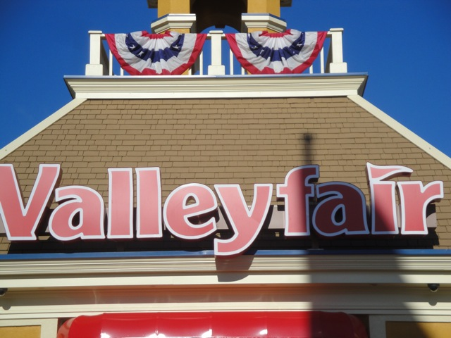
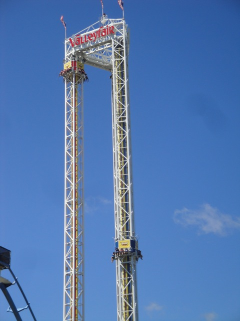
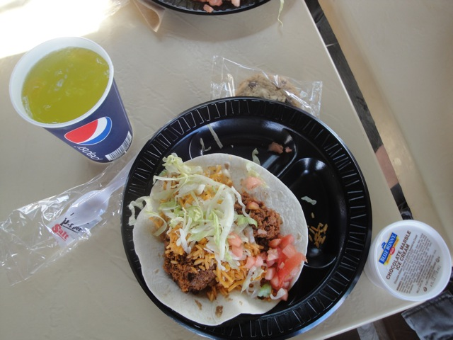
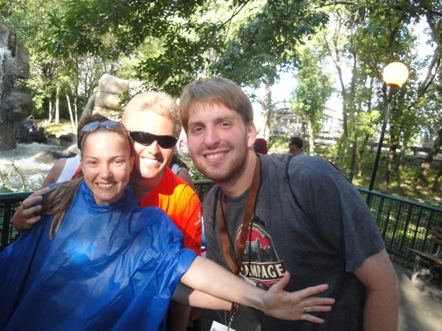

TPR's Middle America Tour
Nickelodeon Universe
Adventureland
Worlds of Fun
Silver Dollar City
City Museum
Six Flags St. Louis
Holiday World
Indiana Beach
Six Flags Great America
Mt. Olympus
Timber Falls
Valleyfair
 Aww. It's our last park of the TPR Middle America Trip. =(
Aww. It's our last park of the TPR Middle America Trip. =(

But luckily, we ended at a pretty kickass park known as Valleyfair.
 In typical TPR Tradition, we have started the day with ERT on Wild Thing.
In typical TPR Tradition, we have started the day with ERT on Wild Thing.
Yup. This is how ERT should be.
 Wild Thing ERT Craziness.
Wild Thing ERT Craziness.
 It was pretty much just like Mamba and Steel Force. Yeah, all Morgan Hypers are pretty much. Now I've completed the standard Morgan Hyper Collection. (Ok, I still need Steel Dragon in Japan, but I'm unfortunetly not going to make it to Japan anytime soon, so it'll just stay with the American Trio for a while.)
It was pretty much just like Mamba and Steel Force. Yeah, all Morgan Hypers are pretty much. Now I've completed the standard Morgan Hyper Collection. (Ok, I still need Steel Dragon in Japan, but I'm unfortunetly not going to make it to Japan anytime soon, so it'll just stay with the American Trio for a while.)
 Ok, Wild Thing ERT is over. Time to go and get the credits. First up, High Roller.
Ok, Wild Thing ERT is over. Time to go and get the credits. First up, High Roller.
 High Roller was a very bizzare ride. It felt like it had potential to be decent, but was raped by a set of super harsh trims on the first turnaround.
High Roller was a very bizzare ride. It felt like it had potential to be decent, but was raped by a set of super harsh trims on the first turnaround.
 All right. Up next, Mad Mouse.
All right. Up next, Mad Mouse.
 While the ride itself was decent, A very special moment has occured on the Arrow Wild Mouse.
While the ride itself was decent, A very special moment has occured on the Arrow Wild Mouse.
Ash got his #100th Credit!!!! =)
 "Hey, at least my 100th wasn't a Boomerang."
"Hey, at least my 100th wasn't a Boomerang."
OMFG!!! Who's idea was it to ride this and why the hell did I join them!!!? I've said it before and I'll say it again. These rides are the product of the Devil herself.
 We decided to take a day ride on Renegade in case it blew up and Night ERT got cancelled.
We decided to take a day ride on Renegade in case it blew up and Night ERT got cancelled.
 Renegade is still a very good woodie and definetly my 2nd Favortite GCI after Prowler.
Renegade is still a very good woodie and definetly my 2nd Favortite GCI after Prowler.
 All right. Now it's time to take a ride on Excalibur, AKA "Frankenstein the ride."
All right. Now it's time to take a ride on Excalibur, AKA "Frankenstein the ride."
 "IT'S ALIVE!!!!!!!!!!!"
"IT'S ALIVE!!!!!!!!!!!"
 Seriously though, Excalibur was a very bizzare and f*cked up coaster. I don't even know if I consider it to be a good coaster or a bad coaster.
Seriously though, Excalibur was a very bizzare and f*cked up coaster. I don't even know if I consider it to be a good coaster or a bad coaster.
 As for good coasters, it's time for us to head to Steel Venom.
As for good coasters, it's time for us to head to Steel Venom.
Yup, it was another really fun ride.
But unlike V2 @ SFGAm, the holding brake was actually working on Steel Venom. =)
Steel Venom Twistiness.
"Check me out. I got my 100th credit today. Arn't I special?"
Dude, they still have their Chaos here at Valleyfair. This place just got even awesomer.
Wild Thing VS Steel Venom. FIGHT!!!!!!!
 All right. Time to get the final credit needed here.
All right. Time to get the final credit needed here.
 Credit #220.
Credit #220.
To my suprise, this was actually a really smooth Arrow Corkscrew.
 Verical Loop on the Corkscrew.
Verical Loop on the Corkscrew.
Hmm. This looks quite similar to another park I've been to.
 Yet another fake helix of death.
Yet another fake helix of death.

All right. Now that we got all the credits out of the way, we can relax and enjoy the park.
But first, lunch.
This band was actually pretty good and managed to play some hits such as Smooth Criminal, and of course, Renegade.

Valleyfair actually decided to do something different and serve us a Tex Mesh rather than typical burgers and stuff. It was really good, I just wish it wasn't so windy since it blew my plate around. (Luckily, all the food was off.)
And then we had the Pointless Awards Ceremony.
Oh yeah. And as a suprise, Valleyfair gave us on ride photo magnests of us on Wild Thing during our morning ERT. First off, thank you Valleyfair. You guys are awesome. Second off, why do Laura and I look like we're getting tazered in our onride photo?
All right. Now onto our Backstage Tour.
Wheels. It had to be wheels.
"I knew we've only been together for a few minutes, but will you marry me?"
Who let Domo in here?
 Wild Thing from the backstage tour.
Wild Thing from the backstage tour.
Yes, because the last thing the United States needs is yet another pointless war.
And now, get ready to see a bunch of cool kickass backstage Renegade shots.
 Here's the common backstage shot. It's a common shot and appears on Valleyfair brochures and on their website. But you can't get it unless you're on a backstage tour.
Here's the common backstage shot. It's a common shot and appears on Valleyfair brochures and on their website. But you can't get it unless you're on a backstage tour.
Yeah, this isn't a shot you see very often.
Check me out and my badass wood. Oh come on, my wood is too badass.
Mike, that's badass wood right there. What you were holding in your hands there is nothing but crap.
Another cool first drop angle.
 Yes, there's actually airtime right there.
Yes, there's actually airtime right there.
Renegade Goodness.
"Ha Ha! Look at those losers on the other side of the gate. Must take photo of losers."
No, I was not hit by the train and you're a sick individual for hoping I was.
I decided to go and check out their Screaming Swing.
 Yeah, that was awesome.
Yeah, that was awesome.
Xtreme Swing from the earlier backstage tour.
We made a deal and promised that Neil would ride the Tilt a Whirl if Jackie would then ride the rapids. Thankfully, they both agreed.
Dude, I don't even care if Jackie does the rapids. Neil on the Tilt a Whirl was the funniest thing on Incrediblecoasters since seeing Robin on the Sun Wheel.
People in our group wanted to get their Mild Thing credit.
However, it was another children only kiddie coaster where you could only get the credit if you went to Valleyfair as a child.
Neil and Colin thought that a little green would be able to get past this obstacle.
"Sorry, we only take bribes with American Dollars. I have no idea what the hell a pound is and I hope I never find out."
Dude, these things are awesome. I've always thought to myself "The only way they could improve Skittles was if they carbonated them." People called me crazy, but now my wet skittles dream has come true.
I can not hide my feelings anymore. I love you Brian.

While it was cool to see Jackie on the rapids, I'd much rather see Neil on the Tilt a Whirl again.
Oh yeah. Valleyfair will be getting a Planet Snoopy in 2011.
No, that's not bad photoshop. That's just a bad picture of the Wave @ Valleyfair which produces a huge splash.
 At this point, I decided to just head into the parking lot get parking lot shots until the bus comes to take us to dinner.
At this point, I decided to just head into the parking lot get parking lot shots until the bus comes to take us to dinner.
 Ooh. Artsy Shot.
Ooh. Artsy Shot.
 I keep expecting the train to come and hit me in this shot due to Mamba's Headchopper Helix.
I keep expecting the train to come and hit me in this shot due to Mamba's Headchopper Helix.
Steel Venom Parking Lot Shots.
I really like this shot. There's just something about it that I really like.
Yeah. That holding brake is definetly awesome.
 "Umm, Samantha? Is everything all right? I mean, it's only an Impulse Coaster. It can't be that bad."
"Umm, Samantha? Is everything all right? I mean, it's only an Impulse Coaster. It can't be that bad."
 Wild Thing Shadow Shot.
Wild Thing Shadow Shot.
Good bye Valleyfair. See you later tonight for Renegade ERT.
In the mean time, it's time for dinner at Buffalo Wild Wings.
Cheers, to a kick ass trip and a kick ass finale of kick ass Renegade.
 Looks like Martin is winning in Trivia again.
Looks like Martin is winning in Trivia again.
 Michael's going for the Buffalo Wild Wings Challenge. Can he do it?
Michael's going for the Buffalo Wild Wings Challenge. Can he do it?
Yup, he did it. And while he looks like the Joker here, he still has more balls than I ever will for doing it.
Night falls and we head back to Valleyfair.
 One last Wild Thing ride at night before it happens.
One last Wild Thing ride at night before it happens.
RENEGADE ERT!!!!!!!
Renegade ERT kicked major ass. It was simply f*cking amazing. There was screaming, cheering, excitement, hand slapping, and everyone was having a ball. Themeparkreview, Incrediblecoasters, the owners of Valleyfair, and even the park security joined in the fun. While I'm still depressed that the trip is over, I'm glad it at least went out with a bang.
Words can not explain how amazing this trip was. So to make it even more amazing, Mike Austin sung Bohemiam Rhapsody by Queen to make one of the most epic moments in human history.
Luckily, the hotel was awesome and had a free arcade for me to drown my sorrows of leaving this awesome trip and saying good bye to everyone through viciously playing PacMan. Seriously, this trip was awesome and I can not wait for the trip that I will do.
Home